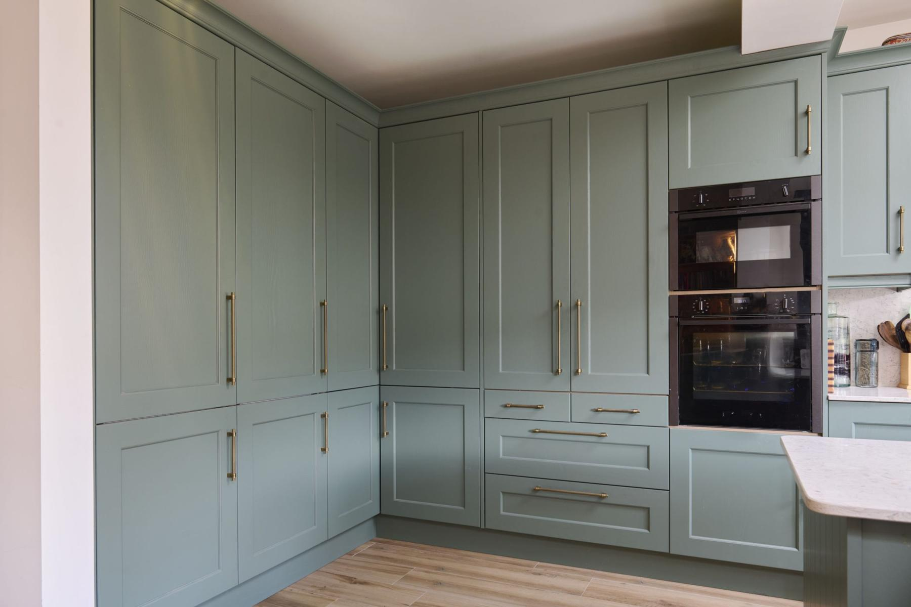

Kitchen
Smoke Green Elegance
Smoke green cabinetry, oak interiors and antique brushed brass hardware are paired with Ivory Fossil quartz. Floor-to-ceiling storage, pantry lighting and a corner pull-out support everyday use.
Plan your space
About the space.
Smoke green cabinetry, oak interiors and antique brushed brass hardware are paired with Ivory Fossil quartz. Floor-to-ceiling storage, pantry lighting and a corner pull-out support everyday use.
← Back to all work